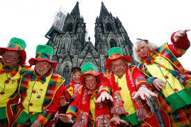

ALEMANIA
Alemania es miembro de la Organización de las Naciones Unidas, la OTAN, el G7, las naciones G4, y firmó el Protocolo de Kioto. Es la cuarta mayor economía mundial en cuanto al PIB nominal, la primera de Europa, y fue el mayor exportador de mercancías del mundo en 2007. En términos absolutos, asigna el tercer mayor presupuesto anual de la ayuda al desarrollo en el mundo, mientras que sus gastos militares ocuparon el noveno lugar mundial en 2012. El país ha desarrollado un alto nivel de vida y establecido un sistema completo de seguridad social. Tiene una posición clave en los asuntos europeos y mantiene una estrecha relación con varias asociaciones a nivel mundial. Es reconocida como líder en los sectores científico y tecnológico.
GEOGRAFIA
La mayor parte de Alemania tiene un clima templado en el que predominan los vientos del oeste. El clima es moderado por la corriente del Atlántico Norte, que es la extensión norte de la corriente del Golfo. Este calentamiento de agua afecta a las zonas que limitan con el mar del Norte incluyendo la península de Jutlandia y la zona a lo largo del Rin, que desemboca en el mar del Norte. Por consiguiente, en el noroeste y el norte, el clima es oceánico, las lluvias se producen durante todo el año con un máximo durante el verano
El informe de monitoreo del Gobierno Federal alemán (“Monitoringbericht 2019”) muestra la siguiente imagen para Alemania: Los últimos años fueron muy cálidos y se caracterizaron por largos períodos de sequía y fenómenos meteorológicos extremos, como tormentas y fuertes lluvias. Los veranos en 2003, 2018 y 2019 fueron los más cálidos desde el comienzo de los registros meteorológicos. La temperatura del aire aumentó 1,5 °C desde 1881 hasta 2018.
.jpg) |
.jpg) |
FLORA Y FAUNA
La mayor parte de los mamíferos vive en bosques donde se pueden encontrar animales como el corzo, el ciervo común, el jabalí, el zorro rojo, el gamo europeo y muchos mustélidos. Los castores y nutrias son habitantes cada vez más raros en los ríos.
Otros mamíferos grandes que vivieron en otra época en Europa Central fueron exterminados, como el uro, el oso pardo, el alce, el caballo salvaje, el bisonte europeo y el lobo. Recientemente han emigrado algunos alces y lobos de Polonia y la República Checa buscando mejores provisiones, pero en el caso del restablecimiento del lobo y el oso es muy problemático debido a la mala reputación de estos animales entre la población.
El águila real se encuentra únicamente en los Alpes en la zona de Baviera y el quebrantahuesos que se encontraba en otra época en esta zona fue exterminado. Los rapaces de presa más frecuentes son el ratonero común y el cernícalo común, al contrario que el halcón peregrino el cual es menos numeroso.
FIESTAS EN ALEMANIA |
|||
FIESTA DE SAN SILVESTRE |
KARNEVAL (EL CARNAVAL) |
MAIFEST |
OKTOBERFEST |
Esta festividad se originó en honor del Papa Silvestre, quien fue la cabeza de la religión católica entre los años 315 y 335. Se celebra cada año el 31 de diciembre acompañado de fuegos artificiales y una de las ciudades más famosas por su forma de festejar es Berlín. |
El Karneval o Fasching se celebra desde la Edad Media y representa la tradición de beber, comer y divertirse justo antes de que empiece el periodo de cuaresma en la religión católica. Las festividades empiezan 52 días antes de la Pascua y terminan justo antes del Miércoles de Ceniza. Algunos de los carnavales más populares son los de Rhineland, Rosenmontag y Baden- Wurtemberg. |
Como ocurre en muchos países alrededor del mundo, los alemanes también celebran el comienzo de la primavera tras un largo y sombrío invierno. Aunque tiene su origen en tradiciones paganas, poco a poco se integró a las celebraciones cristianas. |
Sin duda alguna es una de las tradiciones de la cultura alemana más populares y extendidas alrededor del mundo. Originalmente comenzó en 1810 como una celebración de la boda entre el Príncipe Luis I de Baviera con su esposa Teresa de Sajonia- Hildburghausen. Ambos quisieron compartir su felicidad con los pobladores y organizaron un festejo de 5 días junto a la muralla de Múnich. Fue tal el éxito del evento, que comenzó a repetirse año tras año. |
CULTURA |
|||
EL IDIOMA |
RELIGIÓN |
VESTIMENTA DE ALEMANIA |
COMIDA ALEMANA |
Si hay algo que también distingue y une a una cultura es su idioma. El alemán es una lengua hablada por más de 100 millones de personas y también es el idioma oficial de Austria, Suiza, Bélgica (región germanófona), Liechtenstein y Luxemburgo. Algunas de las peculiaridades de este idioma es que cuenta con 3 géneros: masculino, femenino y uno neutro. |
Sin duda alguna, la religión es otro aspecto que juega un gran papel en el desarrollo de la historia, costumbres, hábitos y cultura de un país. En Alemania existe la libertad de practicar la religión que cada quien prefiera, aunque casi un 36% de sus ciudadanos se consideran no creyentes. El catolicismo (28%), el cristianismo evangélico (26%) y el Islam (4.9%), representan las 3 principales religiones en esta nación al 2019. |
Este elemento sea quizás uno de los que más fácilmente nos hace identificar a un país. En el caso de Alemania nos enfocaremos en dos atuendos típicos. El primero es el Lederhosen ("pantalones de cuero") y son los tradicionales pantalones cortos que usan los hombres y que les llegan hasta las rodillas |
Este listado no podría estar completo sin la gastronomía y la cultura alemana tiene varios elementos que la caracterizan alrededor del mundo. Para empezar, debemos decir que la cocina alemana se distingue por el uso de carne, particularmente la de cerdo y sus derivados. |
.jpg) |
.jpg) |
.jpg) |
 |
.jpg)
.jpg)